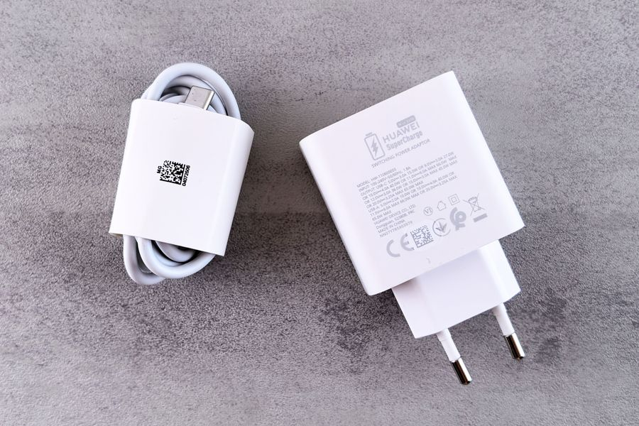
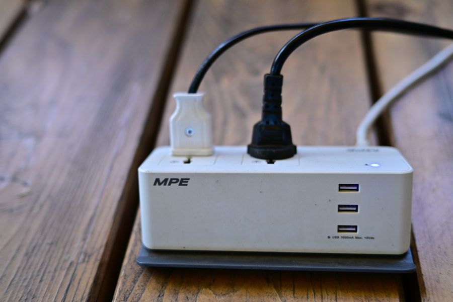
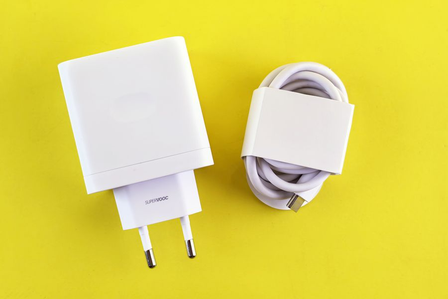

Los mejores en calidad-precio

Imagen orientativa Solo el móvil
Cargador GaN 30 W A favor Diminuto gracias al GaN Sobra para cualquier móvil actual No tapa el enchufe de al lado Para la mesilla o para llevar. Antes mira cuántos vatios admite tu móvil : comprar por encima no lo carga más rápido.
Ver precio actual en Amazon
¿Te lo estás pensando? Añádelo al carrito en Amazon y decídelo con calma: te avisan si baja de precio y lo tienes a mano cuando te decidas.
No ponemos precios porque cambian cada día. Lo ves actualizado al entrar.

Imagen orientativa Móvil y portátil con un solo cargador
Cargador GaN 65 W multipuerto A favor Sustituye al cargador del portátil Varios puertos La mitad de tamaño que uno tradicional En contra Los vatios se REPARTEN entre puertos, no se multiplican El más versátil de la lista y el que mejor viaja. Busca la tabla de reparto del fabricante antes de comprar, o te llevarás una sorpresa.
Ver precio actual en Amazon
¿Te lo estás pensando? Añádelo al carrito en Amazon y decídelo con calma: te avisan si baja de precio y lo tienes a mano cuando te decidas.
No ponemos precios porque cambian cada día. Lo ves actualizado al entrar.

Imagen orientativa Portátil grande y varios aparatos
Cargador GaN 100 W A favor Carga portátiles exigentes Varios dispositivos a la vez En contra Por encima de 60 W hace falta un cable con chip Excesivo si solo cargas el móvil Solo si tu portátil lo pide. Para un móvil es dinero enterrado: la carga no va más rápida por sobrarle margen al cargador.
Ver precio actual en Amazon
¿Te lo estás pensando? Añádelo al carrito en Amazon y decídelo con calma: te avisan si baja de precio y lo tienes a mano cuando te decidas.
No ponemos precios porque cambian cada día. Lo ves actualizado al entrar.